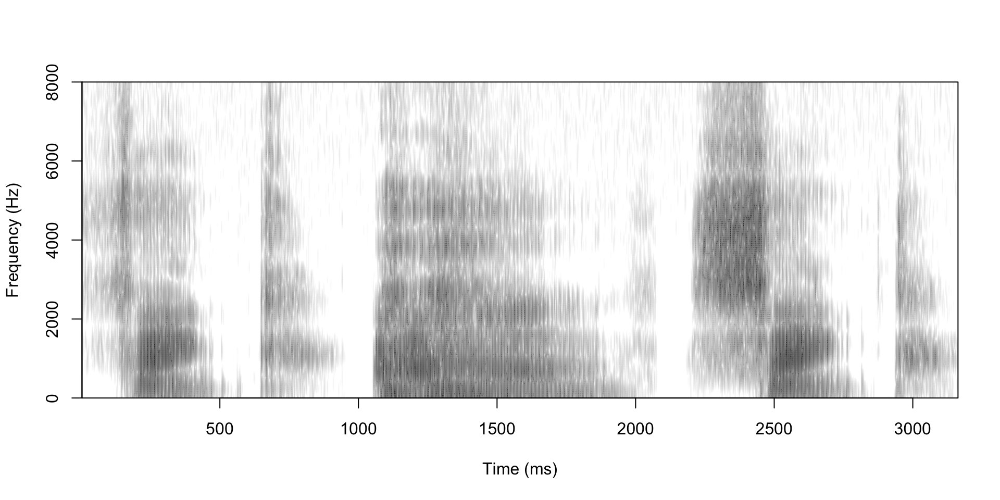
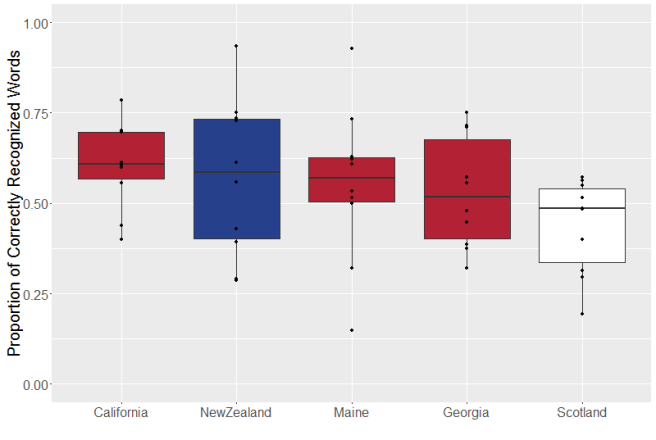

Why are phones so bad at some accents?
Lin 211 • Section 3, Part 7
Kevin B McGowan ![]()
2026-11-04
Ling Link
- We’re going to watch a video (with CC on!) to see how well Siri can do with the Southern accent!
- Your job is to note which specific linguistic features Siri struggles with
- These might be lexical, phonetic, or syntactic
- (While you’re at it, since CC is turned on, you can also see how well Google does with its automatic transcription of what the individuals are saying about their interactions with Siri!)
Computational linguistics
Computational linguistics can be either:
- Programming/training computers to complete linguistic tasks, or
- Using computational methods to conduct linguistics research
- Linguistic tasks include things like:
- Speech synthesis (especially Text To Speech or TTS)
- Automatic Speech Recognition
- Machine translation
- (Large) Language modeling
Speech recognition and synthesis
- Your devices rely on speech recognition technologies , which means that they have the ability to:
- recognize and translate human spoken language into text that can be understood by computers
- and convert text into patterns of sound that people can make sense of
- This allows you to use commands like “call Mom” or “should I wear a sweater today?”
- actually, let’s try that one!
- anyone with an android phone willing to come up here?
Text To Speech (TTS)
- Articulatory synthesis
- Waveform synthesis (e.g. Stephen Hawking’s voice)
- Diphone concatenative synthesis
- Unit selection concatenative synthesis
- HMM synthesis (aka Statistical Parametric Synthesis)
Articulatory Synthesis
Let’s look at some of the other TTS technologies
Automatic Speech Recognition
- Automatic Speech Recognition (ASR) goes the other way!
- A microphone captures speech vibrations
- A computer converts these into a digital representation of the frequencies
- Features of these frequencies are extracted every few milliseconds (MFCCs)
ASR Challenges
Performance
- Speech recognition is complex
- Background noise can get in the way
- Foreground noise can get in the way!
- Linguistic variation can be tricky to capture (mengesha2021don?)
- Especially when the ASR researchers themselves are biased (feng2021quantifying?)
- I said they were getting better – how do we know?
- Accuracy – how often does the system get it wrong?
- Speed – how quickly does it convert from speech to text?
Issues faced in accuracy
Linguistic variation
- Has Siri had trouble understanding what you’ve said?
- Some of the accuracy issues may have been part of the problem, but often, linguistic variation in accent, word choice, etc. can be the problem
- Research has shown that
- African Americans experience error rates up to two times higher than other speakers of American English
- Word identification is less accurate, but
- Word prediction is sometimes better compared to majority dialects
- African Americans experience error rates up to two times higher than other speakers of American English

- Proportion of correctly recognized words by dialect area, color coded by country
- Used YouTube auto-captions on Accent Tag videos (powered by Google)
- Works best on people from California (which just happens to be where Google is headquartered)
- Works worst on Scottish English
References
Language in the World